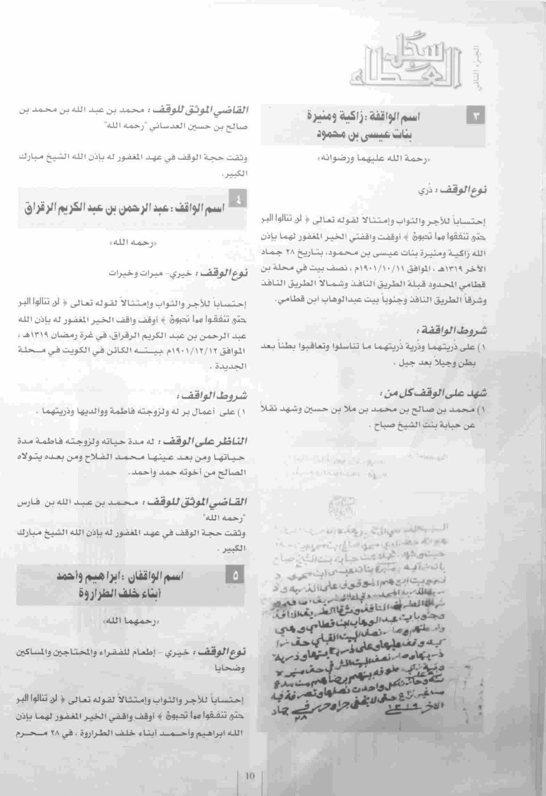

Waqf of 28 Jumada Al-Akhira 1319 AH (11 October 1901); book of the General Secretariat of Awqaf · Book pages, Sijil Al-Ata, part 2: Sirat Al-Waqifin wal-Waqifat, 1901 to 1949, General Secretariat of Awqaf, with a photograph of the original deed
«Mahallat Bin Qatami» and «the house of Abdulwahab ibn Qatami» in 1901, and Aisha bint Abdulaziz Al-Qatami in 1903, in Sijil Al-Ata part 2
What it is
Waqf no. 3 (page 10): on 28 Jumada Al-Akhira 1319 AH (11 October 1901) Zakiyya and Munira, daughters of Eissa bin Mahmoud, endowed «half a house in Mahallat Bin Qatami», bounded on the qibla by the open road, on the north by the open road, on the east by the open road, «and on the south by the house of Abdulwahab ibn Qatami», for their descendants generation after generation. Witnesses: Mohammed bin Saleh bin Mohammed bin Mulla Hussein, and Habbaba bint Sheikh Sabah by report. Recorded by Judge Mohammed bin Abdullah bin Mohammed bin Saleh bin Hussein Al-Adsani in the time of Sheikh Mubarak Al-Kabir. The page prints a photograph of the original deed, which also reads «عبدالوهاب ابن قطامي». Waqf no. 7 (page 11): on 26 Shawwal 1320 AH (25 January 1903) Bazza bint Noura Al-Qa'ayan endowed her house, «which the endower’s daughter Aisha bint Abdulaziz Al-Qatami bought from Fatima for 180 riyals», for herself and her mother, then her daughter Aisha and Aisha’s children.
Why it matters
An official waqf register, with a photograph of the 1901 deed, records the Bin Qatami quarter and the house of Abdulwahab ibn Qatami, and confirms the 1903 Bazza deed already on this site.
Page copies


Notes
Only the first pages are shown here. Family members who sign in can see all 3 pages.
Others named
Sources
General Secretariat of Awqaf, Sijil Al-Ata, part 2: Sirat Al-Waqifin wal-Waqifat 1901 to 1949, pages 10 and 11 (waqfs no. 3 and 7)
How this text was made: The deed does not give Abdulwahab’s father’s name, so it is not linked to a person in the tree. Aisha bint Abdulaziz, wife of Saad bin Ghanim bin Saad, is not yet placed in the tree.
Open in the interactive site